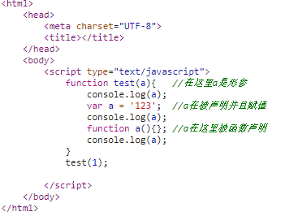
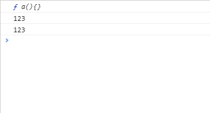
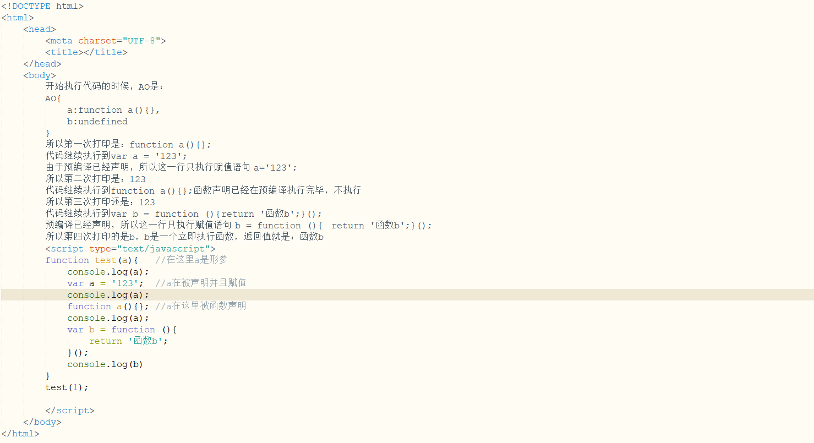
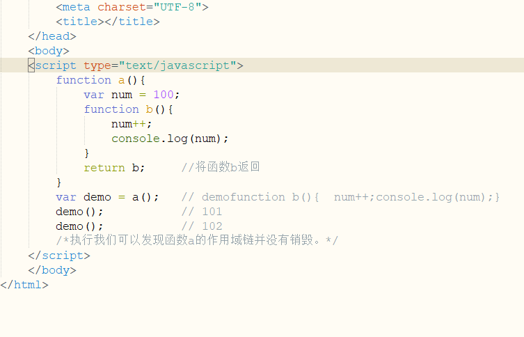
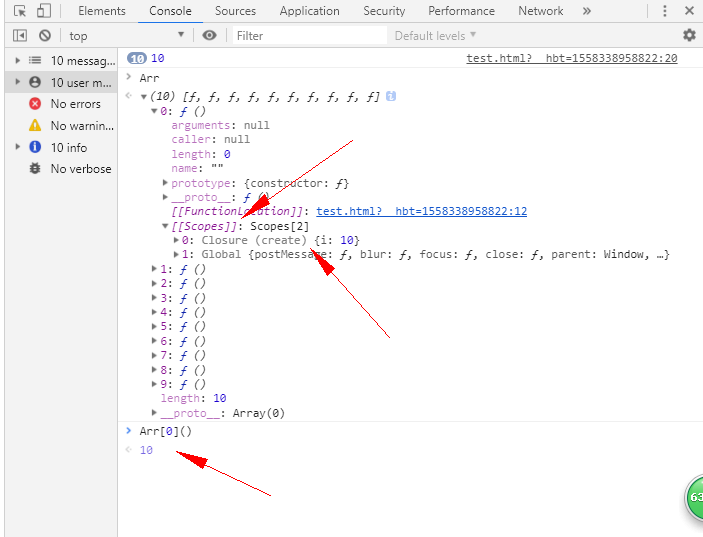
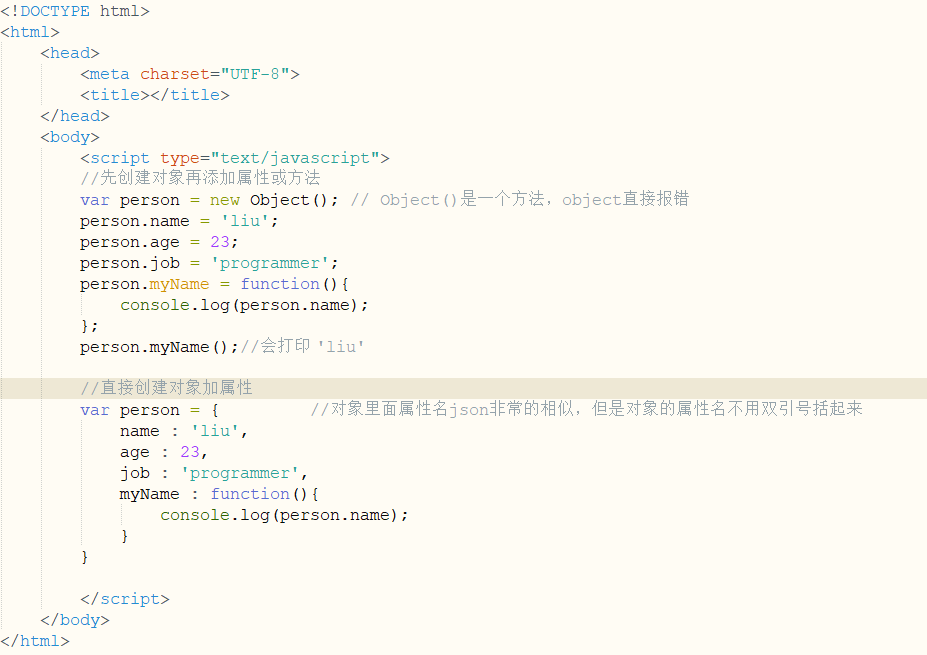
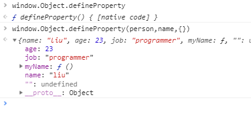
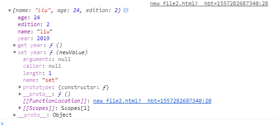
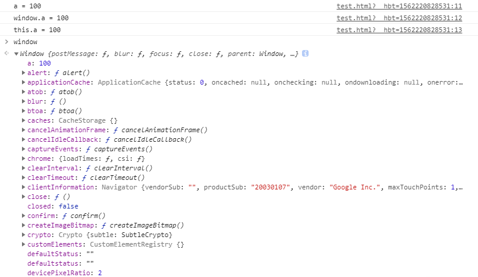

今天没事情回顾了一下我在去年4-6月份学习JavaScript程序设计的笔记。发现书到用时方恨少，感觉自己学的还不够深，准备抽时间啃一下《JavaScript高级程序设计》，同时深入了解一下avaScript程序设计中几个比较难懂的模块。
1.预编译
预编译主要用来解决所有的JavaScrip代码执行顺序的问题。javascript相对于其它语言来说是一种弱类型的语言，在其它如java语言中，程序的执行需要有编译的阶段，而在javascript中也有类似的“预编译阶段”，了解javascript的预编译，将有助于在写js代码过程中的思路总结。
1.1 函数预编译
举个例子来讲解一下(举得例子比较难，不太好懂，但能很好的讲解出预编译的过程)：
function test(a){ //在这里a是形参
console.log(a);
var a = '123'; //a在被声明并且赋值
console.log(a);
function a(){}; //a在这里被函数声明
console.log(a);
var b = function (){
return '函数b';
}();
console.log(b);
}
test(1);这个例子非常的麻烦，它的形参，变量名，函数名用的都是 a，就会出现了覆盖执行的问题，下面我们来解决这个问题。
如果是顺序执行会依次打印：1 ，123，function a(){}，函数b。实际结果输出的是：function a(){}，123，123，函数b。
 
之所以会这样，是因为在预编译的时候执行前上下文规定了它执行的顺序。
预编译主要分为四部：
（1）创立AO对象。在函数上下文中，我们用活动对象AO(activation object)来表示变量对象。
（2）找到形参和声明变量，将变量名和形参名作为AO的属性名。值暂时为undefined。
（3）将实参和形参统一。
（4）在函数体里面找到函数声明，值赋予函数体。
第一步：AO对象建立，AO{ };
第二步：a作为形参出现一次，作为声明变量出现一次。b作为声明变量出现一次。同一个值声明或者作为形参多次我们只写一个。所以现在AO就是：
AO{
a:undefined，
b:undefined
}
第三步：将实参和形参统一。实参就是test(1)里面的1，形参是test(a)里面的a，所以现在AO就是：
AO{
a:1，
b:undefined
}
第四步：在函数体里面找到函数声明，值赋予函数体。函数体只有a()，所以将函数赋值给a，所以现在AO就是：
AO{
a:function a(){}，
b:undefined
}
预编译结束，根据AO和页面代码开始执行，所以：

开始执行代码的时候，AO是：
AO{
a:function a(){},
b:undefined
}
所以第一次打印是：function a(){};
代码继续执行到var a = '123';
由于预编译已经声明，所以这一行只执行赋值语句 a='123';
所以第二次打印是：123
代码继续执行到function a(){};函数声明已经在预编译执行完毕，不执行
所以第三次打印还是：123
代码继续执行到var b = function (){ return '函数b';}();
预编译已经声明，所以这一行只执行赋值语句 b = function (){ return '函数b';}();
所以第四次打印的是b，b是一个立即执行函数，函数立即执行的返回值就是：函数b
1.2 全局的预编译
全局的预编译会生成GO(global object)全局变量，除了没有第三步，其他的和函数的预编译一样，GO里面的的值其实就是window里面的值，都是全局变量。
结论：预编译能解决所有的代码执行顺序的问题。即使不太明白JavaScript的预编译也不是特别影响我们日常对JavaScript的编写，但明白以后我们对JavaScript代码执行的理解会有很大的帮助。
2.闭包
内部函数保存到外部导致闭包。闭包这个问题也不是特别的容易遇到。我开发将近一年了也就遇到了一次，数据显示错误，当时我还以为是自己代码写得有问题，最后一点点debugger，才发现是闭包问题，查阅资料才解决这个问题。
闭包产生的原因是：内部函数保存到外部时作用域链没有释放。
作用域链简介：[[scope]]就是我们常说的作用域，它存储了执行期上下文的集合。简单的说，作用域就是变量与函数的可访问范围，即作用域控制着变量与函数的可见性和生命周期。在JavaScript中，变量的作用域有全局作用域和局部作用域两种，局部作用域又称为函数作用域。作用域链包含了我们在预编译时候介绍的AO{}和GO{}的所有的值。在函数执行结束后作用域链会直接销毁，防止占用内存。

在demo=function b(){ num++;console.log }时，num时函数a里面的变量，不是全局变量。为什么demo在执行时num时a里面的值？通过这个例子我们可以发现函数a的作用域链并没有销毁。这就是闭包。如果不太明白，我再给大家举个例子：
<!DOCTYPE html>
<html>
<head>
<meta charset="UTF-8">
<title></title>
</head>
<body>
<script type="text/javascript">
function create(){
var arr = new Array(); //定义个空数组
for(var i=0;i<10;i++){
arr[i] = function(){ //给数组赋的值是一个函数
return i;
};
}
return arr; //这里返回的是数组，数组的值是一个函数 function (){return i;}
}
var Arr = create();
for(var j=0;j<10;j++){
console.log(Arr[j]()); //这里我们把数组遍历执行一下 打印结果 10 10 10 10 10 10 10 10 10 10
}
</script>
</body>
</html>打印的是 10 10 10 10 10 10 10 10 10 10，如果你认为应该打印 1 2 3 4 5 6 7 8 9 10 说明你可能还不是特别理解闭包。
因为在 var Arr = create()时 这个函数已经执行完毕时返回了一个数组，里面包含了是个数组function (){return i;}，但是这个时候create()的作用域链并没有释放，所以里面定义的i还是等于10；所以再遍历的时候只会打印十个10。
我们在控制台看一下：

在这里我们看到了[[scope]]作用域，它有两个值一个Global {} 这是我们都知道是全局变量对象，另一个是Closure (create){i=0}，Closure就是闭包的意思，也是闭包产生的。这是函数create的局部变量，我们可以清晰的看到i=10，函数create的作用域链没有释放。所以只会打印十个10。
[[scope]]这个东西如果不是闭包，当函数执行完后就销毁了，你根本看不到它。
记住两句话就能解决闭包的问题，1.内部函数保存到外部就是闭包。2.闭包的函数作用域链没有删除，一直存在。
闭包的危害：闭包会携带了函数的作用域，所以会占用更多的内存。由于函数作用域没有释放可能导致结果和我们预期不一样。
闭包的优点：任何事情都有两面性，有危害就有好处，要不然它不会一直存在。例如：
<!DOCTYPE html>
<html>
<head>
<meta charset="UTF-8">
<title></title>
</head>
<body>
<script type="text/javascript">
function create(){
var count = 1;
function add(){
count++;
console.log(count)
}
return add;
}
var Add = create();
Add(); // 2
Add(); // 3
</script>
</body>
</html>通过调用函数Add，我们实现了数据的累加，count本来是局部变量，现在在函数create外面也能正常调用count属性。实现了外部函数调用局部变量。
3.面向对象的程序设计
3.1对象的创建
面向对象的语言有一个一个标志，那就是都有类的概念，并且可以通过类来创建多个具有相同属性的和方法的对象。
在JavaScript里把对象定义为：“无序属性的集合，其属性可以包含基本值、对象或者函数。”
我们可以通过创建Object实例，然后再添加属性或方法。也可以直接在创建对象时就带有一些特征值。举个例子：

这两种方式都可以创建对象，第二种更加的方便一点。
3.2对象的属性类型
ECMAScript中有两种属性：数据访问和访问器属性。
数据属性就是控制对象属性的删除，修改，遍历，查取。
[[Configurable]]：表示能否通过delete删除。
[[Enumerable]]：表示能否通过for-in遍历。
[[Writable]]：表示能否修改属性的值。
[[Value]]：表示这个属性的数据值。
前三个的如果不指定，默认值都是true，[[Value]]是添加属性赋予的值。
只有通过Object.defineProperty()方法才能控制。这个方法需要接受三个参数:对象名，属性名和一个描述符对象。如图所示：

我们可以从控制台看到这个，这个方法是[native code]源代码，并且也能看到它的传参。多数情况下我们都接触不到这些数据属性的这些高级功能，不过对于我们理解JavaScript对象却非常有用。
我再给大家举个例子：
<!DOCTYPE html>
<html>
<head>
<meta charset="UTF-8">
<title></title>
</head>
<body>
<script type="text/javascript">
//直接创建对象加属性
var person = {
name : 'liu',
age : 23,
job : 'programmer',
myName : function(){
console.log(person.name);
}
}
/*通过这个方法我重新给person这个对象的name属性赋值,并禁用删除修改*/
Object.defineProperty(person,'name',{
writable : false, //禁用修改
configurable : false, //禁用删除
value : 'liuzhou' //重新赋值
})
alert(person.name); // 'liuzhou'
person.name = 'liu';
alert(person.name); // 'liuzhou'
delete person.name;
alert(person.name); // 'liuzhou'
</script>
</body>
</html>如果有兴趣可以复制去看一下，通过这个方法我重新给person这个对象的name属性赋值,并禁用删除修改。所以下面的删除，修改就不能实现了。
访问器属性主要包含一对getter和setter函数。
函数读取会调用getter函数，函数写入会调用setter函数。访问器属性也不能直接定义，需要Object.defineProperty()方法来定义。
<!DOCTYPE html>
<html>
<head>
<meta charset="UTF-8">
<title></title>
</head>
<body>
<script type="text/javascript">
//直接创建对象加属性
var person = {
name : 'liu',
age : 23,
edition:1.
}
/*通过这个方法我新建一个year属性,如果大于2018，让person的age和adition都加一*/
Object.defineProperty(person,'year',{ //对象的year属性
get:function(){
},
set:function(newValue){ //形参，叫什么名字都行
if(newValue>2018){
this.age += 1;
person.edition += 1;
}
}
})
person.year = 2019; //增加year属性会调用set方法；
console.log(person);
</script>
</body>
</html>打印效果图：

这是访问器属性的常见方式，即设置的值会导致其他属性发生变化。我们也可以通过Object.defineProperties()一次定义多个属性，如果感兴趣自己可以百度去看一下。
4.ECMAScript的核心
ECMAScript是JavaScript的核心所在，ECMAScript又包括最重要的两个部分BOM(浏览器对象模型)和DOM(文档对象模型)。
4.1 BOM(浏览器对象模型)。
window是js中非常重要的对象，由于window是ECMAScript规定的Global对象，所以我们在全局定义的任何一个变量，函数和对象，window都能访问到.
例如：我们在全局定义一个a并给它赋值100；
<script type="text/javascript">
var a = 100;
console.log('a = ' + a);
console.log('window.a = ' + window.a);
console.log('this.a = ' + this.a);
</script> 我们打印了三个值，发现了这三个值都是一样的，在全局window就是global，this也指向global，所以都打印了100；

我们又在控制台打印了一下window，发现了除了我们定义的a，还有很多的方法，这些Window 对象表示一个浏览器窗口或一个框架。在客户端 JavaScript 中，Window 对象是全局对象，所有的表达式都在当前的环境中计算。也就是说，要引用当前
窗口根本不需要特殊的语法，可以把那个窗口的属性作为全局变量来使用。例如，可以只写 alert，而不必写 window.alert。
简单介绍一下window的基本方法：
alert():警告框；confirm():确认框。点击确定返回true，点击取消返回false；
setTimeOut(要执行的函数,时间)：指定时间后执行单次方法；setInterval(要执行的函数，时间)：每隔指定时间执行一次方法(不清除执行多次)；
clearInterval(id)：关闭interval执行的函数；clearTimeout(id)：关闭指定的timeout执行的函数；
open():使用此方法可以打开当前页面的子页面，可设置子页面窗口的大小，close():在子页面中使用此方法，关闭使用open打开的子页面。
focue():input框聚焦事件；blue()：input失焦事件；
print():打印当前页面，有的游览器预览打印页面，有的直接打印。
BOM特殊的几个对象
location(): 这是比较常用的方法。它既是window的对象也是BOM的对象，
location的属性名及其说明：
host：服务器名称和端口号；hostname:不带端口号的服务好；
href：当前页面的完整的URL； prot：端口号；protocol：页面协议。'http' or 'https'
跳转页面：window.location = "http://baidu.com"; location.href = "http://baidu.com";
navigator对象的属性通常用来检测显示网页的浏览器类型，比如：浏览器名称，版本，cookie是否使用......
history对象保存着用户上网记录，可以使用go()方法在历史记录中跳转。可以向前也可以后退，
history.go(-1)， history.back()，history.forward()，history.go(1)，history.go(0)， 1,forward()代表前进一页，-1,back()表示后退一页，0表示刷新页面。
history.go('inex.html')；跳到指定页面。自定义前进后退按钮时常用。
1.2 DOM(文档对象模型)